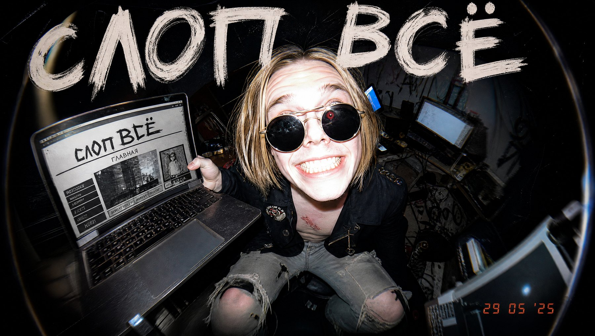

Тринадцать шагов по порядку. Все промпты копируются кнопкой.
01
Создаём дизайн-систему
Заходишь в Claude, слева жмёшь Design. Это отдельная среда под визуал - там живут проекты и дизайн-системы.
Вкладка Design systems
Кнопка Create design system
Из двух карточек берёшь левую - Create here. Правая нужна, только если компоненты уже написаны в коде
Откроется форма, куда грузят логотипы, шрифты и фотки. У нового бренда ничего этого нет - поэтому сначала всё сгенерим.
02
Промпт, который делает весь бренд
Открываешь Claude Code и вставляешь этот промпт целиком. Он возьмёт у тебя интервью, придумает палитру, посчитает стоимость и сгенерит весь пак картинок.
Копируешь промпт целиком - не сокращай и не переписывай
Вставляешь в Claude Code, жмёшь Enter
Промпт 1 · Brand Asset Machine
Ты сейчас соберёшь для меня полный пак фирменных ассетов и вошьёшь его в мой сайт, используя Higgsfield CLI (бинарник `higgsfield` установлен и залогинен). Ты НЕ проектируешь сам сайт - ты создаёшь всё, что сайт на себе носит: логотип, фотографии, движение, текстуры. Бери лучшие модели: nano_banana_pro для фотографий и текстур, gpt_image_2 для логотипа, seedance_2_0 для движения. Дешёвыми не подменять.
ШАГ 0: ВОЗЬМИ У МЕНЯ ИНТЕРВЬЮ (сначала это, пока ничего не генерь)
Задай мне вопросы одним заходом, потом подтверди своё понимание обратно, и только потом иди дальше:
1. Что за продукт или бизнес?
2. Есть ли у меня название бренда, или предложить три с характером?
3. Какой вайб? (два-три прилагательных, или фильм, место, эпоха, на которые это должно быть похоже)
4. Сколько героев-продуктов и есть ли у них имена?
5. Чего избегать? (цвета, которые я не люблю, клише моей категории, конкуренты, на которых не надо походить)
6. Есть готовая папка проекта сайта, куда вшивать, или сначала собираем пак?
ШАГ 1: ИССЛЕДОВАНИЕ, ПАЛИТРА И ПЛАН АССЕТОВ ПОД БРЕНД (после моего подтверждения)
Погугли реальные бренды в моей категории и сильные логотипы - только ради энергии-референса, никогда для копирования. Потом напиши мне художественное направление, где обязательно есть:
- ПАЛИТРА: пять-шесть названных цветов с точными hex-кодами. Напечатай её в чат И сохрани в palette.md. Каждый ассет обязан оставаться внутри этой палитры.
- Направление логотипа: две-три концепции, по одной строке каждая
- ПЛАН АССЕТОВ ПОД БРЕНД: подумай осмысленно, что сайту ИМЕННО ЭТОГО бренда реально нужно. Базовый пак ниже - это пол, а не потолок. Предложи пять-десять добавок под эту нишу, у каждой одна строка назначения: атмосферные накладки (клочья дыма, пар, неоновая дымка, мучная пыль - на чистом чёрном или белом, чтобы чисто накладывались), свой текстурный пак (три-четыре фона секций в палитре), паттерны, значки, макро-детали, кадры окружения. Я утверждаю или правлю этот список до того, как ты что-то оценишь в деньгах.
ШАГ 2: ПАРАМЕТРЫ И СТОИМОСТЬ (отвечай на вопросы CLI этими значениями, потом подтверди со мной)
- Герои-продукты: 16:9 и 1:1 каждый. Баннер и всё остальное: 16:9. Логотип: 1:1
- Одна генерация на ассет первым проходом, перегенерировать только провалы
- Посчитай командой `higgsfield generate cost` базовый пак ПЛЮС утверждённые добавки, покажи мне общую сумму в кредитах и ЖДИ моего слова, не создавая ни одной задачи
- Остаток кредитов проверь сначала командой `higgsfield account`
ШАГ 3: ГЕНЕРАЦИЯ (после моего да)
logo/ (gpt_image_2): плоский векторный знак, три варианта направления, каждый на чистом белом и на прозрачном, без фотофактуры
banner/ (nano_banana_pro): один флагманский кадр для шапки сайта, продукт с одной стороны, чистое место под заголовок с другой
heroes/ (nano_banana_pro): каждый герой-продукт, одинаковая сборка и язык света у всех, 16:9 плюс 1:1
action/ (nano_banana_pro): три макро-кадра, как продукт делают или подают - самые грязные, самые физические моменты
detail/ (nano_banana_pro): два кадра истории качества - сырьё, постановочная раскладка или сцена подготовки
lifestyle/ (nano_banana_pro): два кадра с человеческими руками в мире бренда, читаемого текста в кадре нет нигде
motion/ (seedance_2_0, из лучшего кадра action): ОДИН луп примерно на пять секунд, замедленный, самый удовлетворяющий физический момент, зацикливаемый, плюс постер-кадр к нему. Это станет фоном шапки сайта - повторы трать именно здесь
extras/ всё утверждённое из плана ассетов, разложить по подпапкам по типам
ШАГ 4: ВШИТЬ В САЙТ
Если я дал тебе папку проекта на шаге 0 - подключи ассеты:
- Луп как шапка: автозапуск, без звука, зациклен, постер-кадр как запасной
- Кадры героев на карточки продуктов, баннер туда, где нужна статичная шапка
- Текстуры под секции с низкой прозрачностью, атмосферные накладки поверх них
- Логотип в навигацию и как иконку сайта
Если проекта ещё нет - напиши embed-guide.md с точными кусками HTML и CSS для вставки под каждое из этих мест.
ШАГ 5: ПЕРЕДАЧА В CLAUDE DESIGN
Сохрани всё в ~/Desktop/[имя-бренда]-assets/ плюс:
- palette.md - hex-коды
- manifest.md - каждый файл, модель, промпт, потраченные кредиты
- claude-design-brief.md - ровно то, что просит Claude Design:
- Название компании
- Описание компании (два-три предложения голосом бренда)
- Название дизайн-системы
- Прочие заметки: hex-коды палитры, одна пара шрифтов, слова про тон, два-три правила делать и не делать
В конце напечатай claude-design-brief.md целиком, чтобы я скопировал его прямо в Claude Design.
ПРАВИЛА
- Одинаковая сборка продукта и язык света на каждом ассете. Консистентность - это и есть весь смысл.
- Каждый ассет остаётся внутри палитры из шага 1.
- Никакого текста, впечатанного в фотографию. Знак несут только файлы из logo/.
- Накладки и текстуры достаточно деликатные, чтобы под ними читался текст.
- Вышло не в бренд или с кашей: перегенерируй один раз, прежде чем показывать мне.
Почему не в обычном чате: промпту нужен доступ к генерации картинок. В Claude Code он подключается коннектором, один раз.
03
Отвечаешь на интервью
Он задаст шесть вопросов: что за бизнес, есть ли название, какой вайб, сколько изделий, чего избегать. Отвечаешь одним сообщением.
Промпт 2 · пример ответа - подставь свой бренд
мастерская, которая делает гитарные примочки и ламповые усилители. называется мастодонт. вайб - сырой рок-н-ролл, животная энергия. грязный рок, собранный в лаборатории: тёплое ламповое свечение, латунь, потёртый металл, одна лампочка в тёмном подвале, но внутри коробки зверь, а не гаджет. пять изделий, названия по-русски. избегать всех клише, никаких мамонтов и бивней в лоб.
Не пиши «сделай красиво». Давай ощущение: свет, материалы, место. Из этого нейронка достанет палитру точнее, чем из слова «премиально».
04
Генерим картинки за копейки
Вместо подписки за 40 долларов вызываешь скилл generate и генеришь через Kie. Пополняется российскими картами, одна картинка стоит копейки.
Разрешение задаёшь руками - иначе выдаст самое мелкое
Подробный разбор, как это настроить, - в прошлом видосе.
05
Грузим пак в систему
Возвращаешься в форму дизайн-системы и скармливаешь ей всё, что нагенерилось.
Add fonts, logos and assets → Browse → грузишь папку
В описание вставляешь сводку бренда, которую выдал промпт
Continue to generation, ждёшь около пяти минут
Лимит 50 МБ. Сырая папка картинок в него не влезет - попроси сжать. У нас было 420 МБ, стало 32.
Чем мощнее модель, тем лучше результат. Но учти: одна сборка на Fable съедает половину недельного лимита даже на старшем тарифе.
06
Собираем сайт одним промптом
Система готова - теперь она сама подтянет цвета, шрифты и фотки в любой новый проект.
Промпт 3 · сайт
сделай мне красивый сайт на ассетах этой мастерской. покажи изделия, сделай разные секции, современные компоненты, хороший интерфейс, анимации при скролле, правильное количество текста - не простыня. чтобы выглядело дорого.

Середина путиСайт собран - но это ещё половина дела
07
Забираем сайт себе
Сайт живёт внутри Claude Design. Чтобы доводить его руками и выложить в интернет - забираем к себе.
Share → Project HTML
В окне выбираешь Project archive - архив со всеми файлами, мгновенно и бесплатно
Второй вариант, Standalone, работает моделью и ест твой лимит
Промпт 4 · открыть у себя
ознакомься с этим и открой мне это на локалхосте
Локалхост - это просто способ посмотреть сайт у себя на компьютере. Без интернета и без хостинга.
08
Правишь словами
Первая версия никогда не финальная. Просто пишешь, что не нравится.
Промпт 5 · правки сайта
убери бегущую строку. в блоке с изделиями поставь фотки из папки heroes - те, где все пять сняты в одной сцене и с одним светом. и сделай так, чтобы при клике на изделие менялся блок с описанием под ним
09
Кино прямо внутри сайта
Аккуратный сайт - это ещё не дорогой. Дорогой - когда есть одна вещь, на которой человек залипает.
Кидаешь файл в Claude Code и пишешь промпт ниже - он поставит скилл сам
Дальше вызываешь его слэшем, он задаст три вопроса
Отвечаешь: чем снимать, куда встроить, сколько клипов
Ставим скилл · один раз, файл кидаешь в чат
установи этот файл как скилл и назови его scroll-film-studio. внутри лежат четыре части: основной SKILL.md и три справочных файла - playbook, engine и finishing. разложи их как положено: SKILL.md в корень папки скилла, три справочных в подпапку references. в конце скажи, что скилл готов и как его вызывать
Промпт 6 · вызов скилла
/scroll-film-studio задай мне вопросы и сделай красивое 3D-анимированное видео, чтобы встроить его в этот сайт. возьми графику, изображения и стиль этого бренда
Промпт 7 · ответы на вопросы
сайт уже есть, встраиваем в него. движок - higgsfield seedance. размещение - отдельной секцией между блоками, не на весь первый экран. длина - три клипа по пять секунд
Украшательство - ловушка. Три крутящихся объекта это тот же слоп, только другого сорта. Анимируй одну вещь.
10
Маршрут камеры
Главное правило, из-за которого такое кино обычно разваливается: у всего фильма должно быть одно направление.
Промпт 8 · маршрут камеры
маршрут такой: камера всё время идёт только вперёд и вглубь, ни разу не отступает и не отъезжает. четыре опорные точки, бери их из папки ассетов: banner-hero - тёмная мастерская с одной лампой слева. detail-bench - верстак крупнее, вскрытая педаль с цветными проводами. action-solder - макро, паяльник и дым внутри корпуса. action-tube - накал лампы во весь кадр. новые кадры не генерь, используй эти
Камера пошла вперёд - значит вперёд до конца. Поехала вбок, потом назад - человек скроллит, а картинка не складывается, и это читается как нарезка случайных кусков.
11
Воруем готовую карусель
В интернете есть склады готовых красивых кусков для сайта: кнопки, карусели, анимированные фоны. Люди их сделали и отдают бесплатно.
поставь вот эту карусель вместо ряда изделий, картинки возьми наши. клик по центральной должен по-прежнему менять блок с описанием
Код не копируется - просто скриншоть понравившийся сайт и скажи: нравится этот вайб, сделай похоже.
12
Встраиваем кино в сайт
Три клипа склеиваются встык и играют как один непрерывный проезд.
Промпт 10 · встроить кино
встрой это кино отдельной секцией между блоком с изделиями и блоком про мамонт. три клипа должны идти встык, без чёрных кадров между ними. запускается когда доскроллил, в конце пусть поверх проявится наш логотип
Логотип всегда давай файлом. Загрузил - повторит точно. Попросишь придумать - получишь в каждой картинке свой вариант знака.
13
Анимация из той же системы
Один сайт - это демка. Система, из которой достаёшь что угодно за минуту, - это уже услуга.
Новый проект → шаблон Animation
Clear selection - отвязываешься от текущей системы
Плюсик → Attach file → цепляешь описание бренда
Промпт 11 · оживить описание бренда
оживи это. мастодонт - мастерская, которая собирает гитарные примочки и ламповые усилители. тяжёлое железо для рок-н-ролла, собрано инженерами. разбей на три секции
Промпт 12 · правка анимации
хочу видеть только красивые блоки, текста меньше. короткие подписи оставь, но чтобы человек не щурился и не напрягался. убери лишнее и упрости
Файл с описанием бренда создаёт тот же промпт из шага 2 - он сохраняет его в папку вместе с картинками.
Скилл для 3D-кино
Короткий пересказ скилла на русском - чтобы понимать, по каким правилам он работает. Ставится скилл файлом из шага 09, там лежит полная версия.
Промпт S · scroll-film-studio - копируй целиком
---
name: scroll-film-studio
description: Собирает сайты, где главный экран - непрерывный кинокадр, который прокручивается вместе со скроллом. Умеет два режима: сделать такую страницу с нуля или встроить кино в уже готовый сайт отдельной секцией, фоновой петлёй или прокручиваемым первым экраном. Используй когда просят кино на скролле, анимированный сайт, кинематографическую секцию, 3D-видео внутрь сайта, скролл-фильм, залипательный сайт.
---
# Скилл: кино на скролле
Ты собираешь сайты, где главный экран - это не картинка, а непрерывный кинокадр, который прокручивается вместе со скроллом и переходит в контент ниже.
Два способа сделать фильм:
- **Путь А, чистый код (по умолчанию, ничего настраивать не надо).** Фильм собирается движением: закреплённые сцены, параллакс, раскрытие через маску, горизонтальные проезды. Стоит ноль, аккаунтов не требует.
- **Путь Б, настоящее видео (по желанию).** Фильм - это сгенерированные клипы, сшитые встык и прокручиваемые на холсте. Нужен свой доступ к движку генерации видео и кредиты. Это фирменный вид.
Оба дают красивый результат. Путь А доступен всегда, путь Б открывается, когда есть чем генерить видео.
---
## ДВА РЕЖИМА - собрать сайт или встроить в готовый
**Сначала спроси: «У тебя уже есть сайт, куда это встроить, или страницу делаем с нуля?»** От ответа зависит всё дальнейшее.
- **Режим сайта с нуля** - проходишь весь процесс ниже без изменений. Фильм и есть страница.
- **Режим встраивания** - у человека уже есть сайт. Ты НЕ проектируешь сайт заново. Ты делаешь фильм и его картинки и встраиваешь их в то, что уже есть. Его дизайн главнее, ты ему подчиняешься.
### Правила режима встраивания
1. **Сначала прочитай сайт.** Открой проект, вытащи настоящую палитру, шрифты, отступы и фирменные материалы - логотипы, фотографии товара, текстуры. Фильм должен выглядеть снятым для ЭТОГО бренда, поэтому по возможности бери их же изображения как опорные кадры.
2. **Предложи ровно три варианта размещения** и порекомендуй один:
- **Прокручиваемый первый экран** - фильм перематывается скроллом в самом верху страницы. Около 25 секунд. Фирменный вид.
- **Фоновая петля** - короткий бесшовный цикл за шапкой: 5-8 секунд, первый и последний кадр совпадают, без звука, с постер-кадром.
- **Отдельная секция** - кинематографический блок во всю ширину между двумя существующими секциями, запускается при попадании в экран. Около 25 секунд.
3. **Генерируй тем движком, что есть у человека.** Нет движка - собирай движение чистым кодом из его же изображений.
4. **Встраивай без разрушений.** Трогай только то, что нужно для выбранного размещения: разметку новой секции, механику прокрутки, постер-кадр и облегчённый вариант для тех, кто отключил анимацию. Не переделывай и не «улучшай» остальной сайт. На телефоне ставь постер или лёгкую петлю, а не 25-секундную прокрутку.
5. **В конце скажи, какие именно файлы тронул** и как откатить.
---
## ГЛАВНОЕ ПРАВИЛО - дизайн не делегируется
Работай на самой сильной модели, которая доступна, и на максимальном уровне усилий. Все решения о вкусе оставляй на ней: концепции, художественное направление, палитра, шрифты, вёрстка, движение, тексты, сама сборка и финальная проверка.
Отдавать можно только две вещи, и никогда не дизайн:
- **Механическую работу** - без модели вообще: нарезка кадров, сравнение картинок, сборка, проверки.
- **Ограниченные черновики** - отдельные подзадачи со свежим контекстом: написать промпт одной главы, написать одну секцию под фильмом, выступить критиком концепций.
**У каждого бренда своя страница.** Не перекрашивай сайт, собранный раньше: та же структура, те же места переходов, тот же каркас, новые цвета - это самый быстрый способ сделать два посредственных сайта вместо одного хорошего.
---
## ШАГ 0 - интервью
Спроси всё это сразу, одним заходом. У каждого творческого вопроса есть путь «решай сам» - если человек не хочет выбирать, решай художественное направление самостоятельно и иди дальше. Никогда не застревай на вопросе, ответ на который можешь дать хорошо сам.
0. **Есть готовый сайт или делаем с нуля?** Есть - режим встраивания, спроси заодно про размещение и где лежит проект.
1. **Что собираем и какое ощущение одной строкой?** Название, что это, какое чувство.
2. **Есть фирменные материалы или мир придумываю я?** Готовый логотип, цвета, шрифты, настоящие фотографии - или полная свобода.
3. **Маршрут - один непрерывный проезд сверху вниз.** Откуда камера начинает и куда приходит, то есть **превращение**. Это сердце всей сборки.
4. **Настоящее видео или движение кодом?** Не уверен или хочешь без настроек - берём код.
5. **(Только для видео) Чем генерим?** Спроси прямо. Установлено ли, залогинено ли, сколько глав, есть ли потолок по деньгам. Сначала черновик, подтверждение стоимости, и только потом чистовой прогон в полном качестве.
6. **Что идёт под фильмом?** Секции ниже - линейка, коллекция, запись, манифест - главное действие, контакты.
7. **Куда это выкладывать?** Только локально или публикуем.
---
## ШАГ 1 - концепции, до всякой сборки
Придумай **две-три названные концепции** и покажи их. Правила:
- Первой идёт та, что рекомендуешь, и это прямо сказано.
- У каждой - **конкретный рассказ, что человек увидит**, а не одна абстрактная фраза. Проведи по прокрутке: что видно сверху, что происходит при скролле, что в каждой главе, как фильм переходит в контент.
- У каждой есть имя, путь (код или видео), число глав и, для видео, прикидка стоимости.
- **Концепции обязан атаковать тот, кто их не писал.** Это не пропускается. Дай ему только бренд и сами концепции - без твоих рассуждений, без того, какая тебе нравится, и без упоминания, что писал их ты. Попроси: разнести каждую (читается ли маршрут, запоминается ли, происходит ли превращение или это просто четыре разных кадра подряд, влезает ли в заявленное число глав) и предложить один дикий вариант, которого никто не рассматривал. Что выжило - вставляешь в свою подачу.
*Модель, проверяющая собственную свежую работу в том же разговоре, не проверяет, а защищает то, что только что написала.*
- Дай выбрать или смешать. Сказали «выбирай сам» - берёшь рекомендованную и идёшь.
Собирать начинаешь только после выбора концепции.
---
## ШАГ 2 - художественное направление
Реши и зафиксируй: палитра точными кодами цветов, пара шрифтов с характером (никаких системных шрифтов по умолчанию), знак бренда, ощущение движения, названия глав. У каждого бренда свои шрифты и свой мир. Логотипы реальных сторонних сервисов бери настоящими файлами, а не рисуй похожее от руки.
---
## ПУТЬ А - чистый код
Пишешь одну самодостаточную страницу с нуля под этот бренд. Библиотеки анимации подключаешь ссылкой. Фильм собираешь из приёмов: закреплённые сцены, привязанные к прокрутке таймлайны, посимвольное раскрытие заголовка, горизонтальные проезды с параллаксом, наклон от скорости, счётчики, бегущие строки - и расставляешь их так, чтобы они рассказывали маршрут ИМЕННО этого бренда.
Важный порядок: **создавай фоновые эффекты ПОСЛЕ закреплённых сцен.** Порядок создания - это порядок пересчёта, и нарушение тихо сдвигает всё, что идёт после закреплённой сцены.
---
## ПУТЬ Б - настоящее видео
### Какой моделью снимать
Бери **лучшую доступную модель для оживления картинки**. Перед первой генерацией посмотри, что реально доступно на аккаунте, и выбери самую сильную версию. Скажи в чат, какую выбрал и почему.
Никогда не откатывайся молча на модель послабее из-за одной ошибки - повтори попытку или скажи, что движок недоступен. Фильм, тихо снятый на слабой модели, - самый незаметный и самый дорогой в переделке провал: он не выглядит сломанным, он выглядит дёшево.
### Как собирается фильм
1. **Раскадровка.** Разбей выбранную концепцию на главы, одно непрерывное направление камеры на всю длину.
**По умолчанию 5 клипов по 5 секунд = фильм на 25 секунд, и это подтверждается у человека до генерации.** Назови число клипов, секунды, общую длину и стоимость, и дождись «да». Хочет длиннее - добавляй **клипы**, а не секунды внутри клипа.
**Перед раскадровкой спроси, влезает ли весь фильм в одну генерацию.** Одна генерация не может иметь шва - ей не нужны ни проверки стыков, ни починка. Склейка - это компромисс, а не первый выбор.
**Считай не длину, а расстояние.** Ломает фильм не то, сколько он идёт, а то, как далеко одному клипу приходится ехать. Жёсткое правило:
> **Один клип = одно направление камеры, одно место, одно состояние света.**
> Меняется хоть одно из трёх - это уже другой клип.
**И у всего фильма ОДИН вектор.** Назови его одной фразой до того, как напишешь первый клип - «камера только углубляется», «камера только падает» - и дальше каждый клип обязан продолжать этот вектор. Человек скроллит в одну сторону; если камера едет вперёд, потом вбок, потом назад, потом снова вперёд - прокрутка перестаёт что-либо значить, и фильм читается как набор случайно склеенных кусков.
Пиши переходы, а не только кадры. В промпте каждого клипа должно быть сказано, **как он продолжает предыдущий**, а не просто что в нём есть: «продолжая тот же наезд, теперь проходим мимо стены» - а не «кадр стены». Продаётся стык, кадр - это лишь место, где стык происходит.
Проверь свою раскадровку до того, как потратишь деньги: пройди по промптам и найди слова направления. Если в одном клипе есть и «внутрь» и «наружу» - клип разворачивается сам на себе. Если слов направления нет вообще - у клипа нет инструкции, и модель придумает её сама.
**Один разворот допустим, если разворот и есть история** - например, спуск на дно и подъём обратно через горлышко. Тогда объяви его в описании вектора. Необъявленный разворот - это ошибка.
Клип, которому велено попасть с солнечной поляны внутрь тёмной мастерской, обязан сменить всё сразу - и модель не поедет, а прыгнет: приземлится на нужный кадр, чтобы стык сошёлся, а в середине склеит рывком, где никто не смотрит.
Лучше **больше коротких клипов**: пять секунд уводит меньше, чем девять, и восемь маленьких движений лучше четырёх больших при той же общей длине. Нужен и наезд, и смена места - вставь промежуточный опорный кадр и отдай по клипу на каждое.
2. **Генерация.** Каждый клип закрепляется с ОБОИХ концов: стартовым и финальным кадром. Клип **обязан прийти** в следующий опорный кадр. Модель, у которой закреплено только начало, вольна уехать куда угодно, а потом рывком вернуться к цели - именно эта свобода и порождает рывки.
**Но стартовое закрепление - это реальный последний кадр предыдущего клипа, а не опорная картинка.** Это заставляет цепочку идти строго последовательно: клип не может начать рендериться, пока не закончился предыдущий. Никогда не запускай клипы параллельно.
Опорные кадры делай цепочкой: каждый следующий генерируется с предыдущим как образцом, последовательно, чтобы палитра, свет, материалы и масштаб наследовались, а не выдумывались заново.
3. **Проверь непрерывность всего фильма, прежде чем что-то собирать.** Стык и середина - разные вещи, и проверка одних стыков соврёт. При склейке стартовый кадр каждого клипа равен последнему кадру предыдущего, поэтому стыки сходятся по построению - они не могут не сойтись. Убегает середина клипа. Причина почти всегда в раскадровке, а не в движке: если клипу надо сменить место, масштаб и свет разом - он телепортируется. Больше клипов, каждый едет меньше.
4. **Проверь каждый стык измерением, а не глазами.** Плохой стык чинится перегенерацией с точной формулировкой продолжения. Замазывать шов плавным переходом запрещено.
5. **Собери фильм** и **нарезай кадры на родной частоте**. Фильм на 72 секунды при 24 кадрах в секунду - это 1729 кадров, и если выгрузить «примерно 300», страница будет прокручиваться слайд-шоу. Это ровно та причина, по которой всё «дёргается», и её не видно в коде: движок исправен, ему просто нечего рисовать. Меняй разрешение на количество кадров, а не наоборот.
6. **Обрежь начало фильма и только потом фиксируй число кадров.** Сгенерированные фильмы регулярно открываются кадром, который ещё не начал двигаться, или кадрировкой, будто это другое видео - и это читается как рывок в собственный фильм, причём самый первый, что видит человек. Просмотри первые пару секунд покадрово и режь, пока открывающий кадр не окажется уже внутри движения.
7. **Собери страницу вокруг материала**: механика прокрутки на холсте, плавный переход между кадрами, шапка, меняющая контраст, отметки глав, наложения по ключевым моментам, передача в контент под фильмом.
**Часть генераций падает на стороне сервиса без причины и не списывает деньги - просто повтори.**
---
## ДЕНЬГИ
1. **Звук выключен.** Со звуком счёт вырастает втрое, а фильму на прокрутке звук не нужен.
2. **Подтверждай до траты.** Назови сумму до генерации, покажи остаток после.
3. **Черновик дешёвый, чистовик один.** Проверь всю цепочку на самом дешёвом качестве, потом перезапусти в полном только то, что утвердили.
4. **Переиспользуй материал.** Один фильм тянет несколько направлений - платишь за съёмку, перекраска бесплатна.
---
## ПРОВЕРКА
Сделай так, чтобы страницу можно было открыть сразу на нужной позиции прокрутки и чтобы она сама сообщала, когда полностью готова. Снимай экран на каждом ключевом моменте и на каждом стыке. Проверь плавность по задержкам между кадрами - смотри на худшие значения, а не на среднее. Никогда не проси человека глазами проверять то, что можешь измерить.
**Проверка - это доказательство, а не истина. Всегда смотри и на сами пиксели.** Удивительный результат, хороший или плохой, считай утверждением о самой проверке, пока снимок экрана его не подтвердит.
**Отдельно оцени превращение, а не отдельные моменты.** Снимки в начале и в конце должны читаться как начало и конец одного путешествия: герой доехал, а не подменился. Если две главы можно поменять местами и страница не станет выглядеть сломанной - это не один непрерывный кадр, а стопка секций, и замысел провален.
**Страница не должна объяснять сама себя.** Если на ней написано «как читать эту страницу» или «по мере прокрутки кадр сужается» - она пересказала задание вместо того, чтобы его выполнить. Это самый частый способ пройти все технические проверки и всё равно получить не сайт.
---
## ЖЕЛЕЗНЫЕ ПРАВИЛА
- Дизайн и сборка остаются на сильной модели. Механика уходит в код, дизайн - никогда.
- Подтверждай стоимость до траты, показывай чек после.
- Один непрерывный кадр. Один мир на бренд. Никаких видимых швов. Никаких плавных переходов, замазывающих стык.
- Уважай отключённую анимацию в каждой сборке.
- Концепции всегда атакует тот, кто их не писал. Не пропускается, самопроверкой не заменяется.
## ЛОВУШКИ
- **Никогда не запускай сервер в основном потоке.** Он не завершится, и вся работа потеряется без сообщения об ошибке.
- **Никогда не давай двум редакторам править один файл.** Если страницу одновременно правит человек или другой процесс - сначала останови одного из них.
- **Длинная сборка упрётся в предел памяти разговора.** Указания, данные в чате, забудутся; записанные в файл рядом с проектом - останутся. Клади туда пути к кадрам, их количество, цвет стыка и список запретов.
- **Устаревший список задач переживает поправки.** После сброса памяти работа продолжится по списку, поэтому поправляй список, а не только разговор.
- **Качай с браузерным заголовком и записывай номера задач на диск сразу, как получил.** Иначе неудачная загрузка после оплаченной генерации не восстановится и обойдётся вдвое.